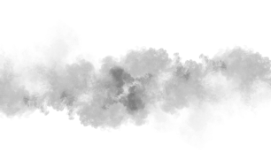

Crysis
Главный герой — морской пехотинец Алькатрас, который получает нанокостюм второй версии. В нём вшит странный код, расшифровка которого, по уверениям учёных, позволит спасти людей от страшной чумы. Также Алькатрас — живое орудие, способное защитить людей от инопланетян, которые вернулись с намерением стереть людей с лица планеты.